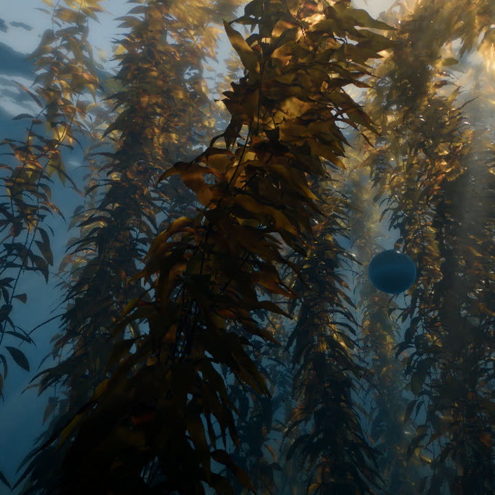
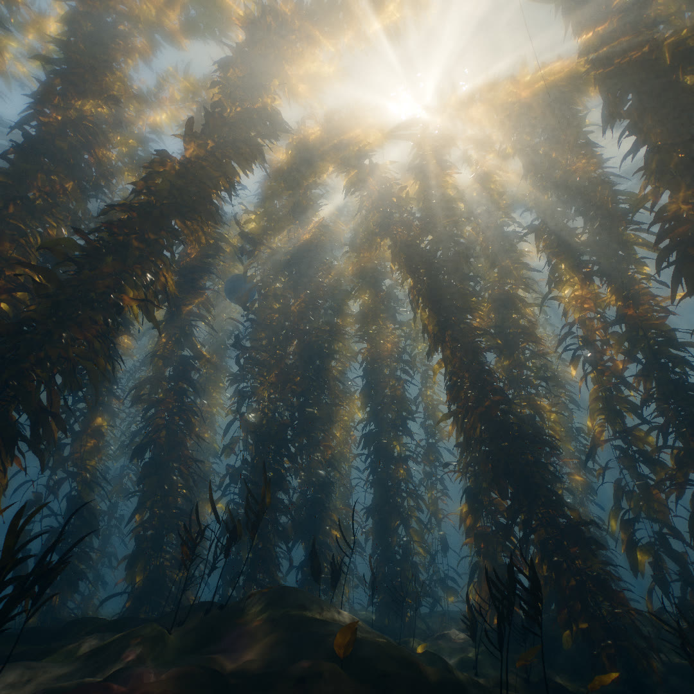
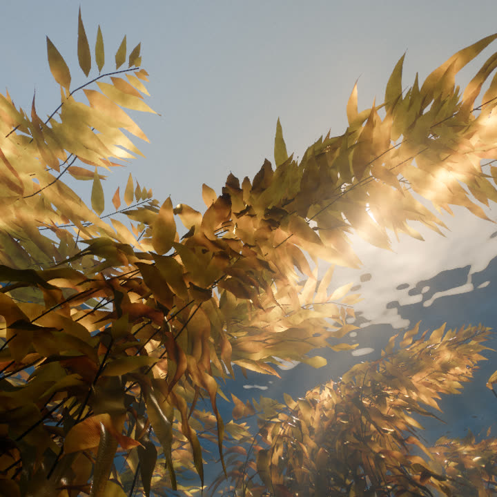
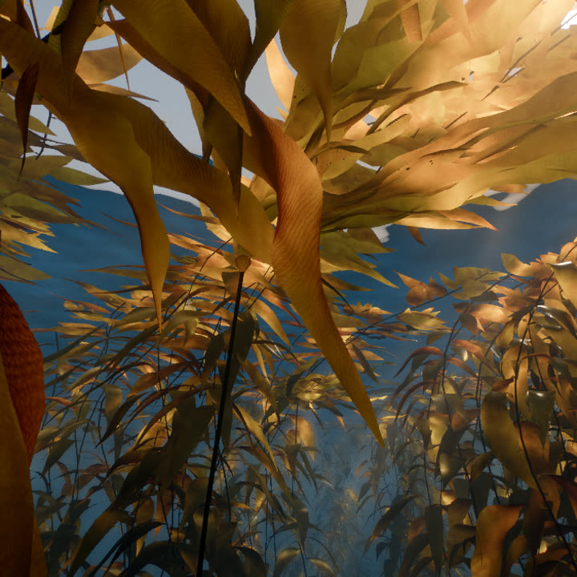
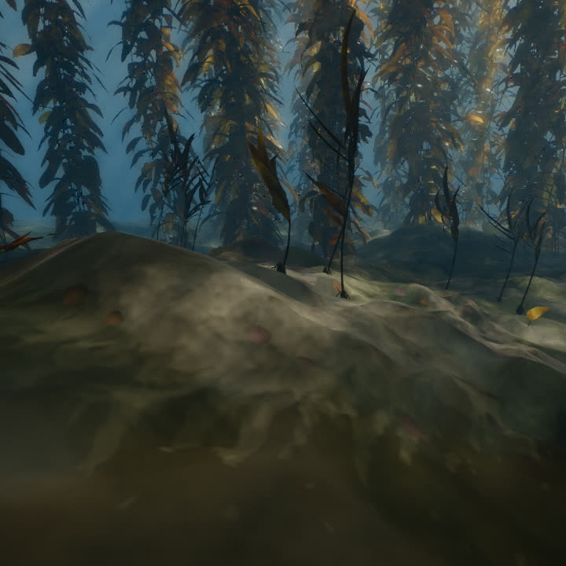

A column of fronds
Dense, overlapping blades on stalked bladders. The ones between the camera and the sun glow; the ones in another blade's shadow stay dark brown.
A giant kelp forest seen from the reef, looking up into the sun. Here is how thirty thousand blades are grown and moved by a sea that swells and surges, and how the water is lit: the sun bent at the surface, caustics focused by its waves, light passing amber through the blades, and shafts that break behind them.
See it live
The day started from a small kelp-forest sketch with a CPU fluid and kelp physics, and grew toward one photograph: the classic shot of a California kelp forest from the bottom, columns of giant kelp rising to a canopy at the surface, the sun breaking through in shafts, and every blade between the camera and the sun glowing gold. The camera stays fixed on that view; the sea does the moving.
Unlike most days this month, it doesn't use the shared rendering pipeline. Underwater light is mostly about what happens in the water between things, so the day has its own small renderer built around that, and borrows the pipeline's bloom and final pass (exposure, AgX, vignette, grain) for the finish.
Giant kelp (Macrocystis) grows in bundles of stipes from a holdfast on the rock. Each stipe is a thin stalk that wanders up to the surface and, if it is old enough, carries on along it as the canopy. Blades grow from its tip, so along a frond they are crowded and small near the top and long and worn lower down, where old fronds have shed some. Every blade sits on a small pear-shaped gas bladder: a wedge base, widest about a third up, pointed when young and blunt when old, with ruffled margins, bending over from its bladder and hanging downstream.
Bull kelp (Nereocystis) is a single whip of a stipe that swells into a bulb under the surface, with two bunches of long ribbons streaming from it. Palm kelp (Pterygophora) stands on the reef: a short woody stipe with two rows of narrow dark blades. The reef itself is a field of boulders, and every plant stands on it.
All of it is one mesh of about two million triangles, built in a web worker so a new forest never stalls the page, together with a coarser copy for the shadow map and the layout the physics needs.

Dense, overlapping blades on stalked bladders. The ones between the camera and the sun glow; the ones in another blade's shadow stay dark brown.

Fronds that reach the surface run along it downstream, a gold mass against Snell's window.

Up here the blades get the most light and the most motion: they stream with the surge and ripple along their length.

Boulders under a blanket of caustics, with palm kelp standing on them and the giant kelp's holdfasts among them.
The water is a sum of two things. A swell, evaluated exactly as linear waves over the depth of the reef: one long wave with a ten-second period that sways the whole forest back and forth together, and two small ones that roughen it. On top, a coarse fluid on the CPU (24 × 18 × 24 cells) carries what stirs the water: slow eddies, the probe's wake, the pointer. Every ten to twenty-five seconds a surge passes: a pulse of flow that builds over two seconds, pushes the forest further one way, and eases off over three and a half.
Each stipe is a chain of fourteen Verlet nodes pinned at its holdfast, dragged by the difference between the water and itself, held up by buoyancy (bull kelp by its bulb) or by its own stiffness (palm kelp), and kept under the surface. Near plants' blades are simulated too, as tip particles hinged to their stipe within a cone; further back they ride their stipes. On the GPU each blade is turned toward its tip and bent along an arc, so a ribbon bends all along while a palm blade barely does, with a ripple running down it; stipes are drawn through their nodes as smooth Catmull-Rom curves.
The same recipe in two dimensions: a chain of nodes pinned at the bottom, dragged toward the water's flow and held up by buoyancy. The steady swell sways it; a surge pushes it further, then it swings back. Below, the flow over the last twenty seconds.
Everything is lit by one model of the water. The sun is bent where it enters (Snell's law) and loses light on its way down, red first; the eye's ray loses it again on its way back, so distant kelp fades to blue. A diffuse light comes down from the bright surface and is scattered toward the eye along every ray, and that in-scatter, integrated in closed form, is what colours the water: brighter looking up toward the surface, darker looking down, deep blue in between. The fog on every surface and the backdrop behind them are the same function, so the forest fades into exactly the water behind it.
Looking up, the surface shows Snell's window: inside the critical angle of 48.6° the sky, squeezed into a disc with the sun's glints in it; outside it, the deep water reflected. Both ripple with the same waves that make the caustics.
The ripples of light on the reef and the blades are real refraction. A grid laid over a tiling patch of the surface refracts the sun through the wave normals, and each cell lands where its light goes at a focus depth of nine metres. How bright it lands is how much its area shrank on the way, measured with screen-space derivatives as the grid is drawn into a texture (Evan Wallace's method). Everything underwater looks the pattern up along the sun, sharper near the focus depth and blurred further from it by reading a lower mip.
Rays of sunlight refract at the wavy surface and bunch where the surface curves like a lens. The bright line is the light arriving at the chosen depth: sharp filaments near the focus, softer bands deeper down.
A kelp blade is a thin sheet of tissue: it reflects little, and what it lets through comes out amber, because it absorbs blue first, then green. The side facing the sun gets its reflected light; the other side gets the light through the blade, half spread out and half scattered forward, so a blade between the eye and the sun glows brightest. Seen obliquely the path through it is longer and the colour deeper; thick bases go darker amber, thin tips lemon.
The sun's shadow map is drawn from a coarser copy of the forest. Shadows soften with distance to what casts them, and kelp doesn't cast black shadows: light through one blade is amber, and each further layer of blades above takes more of it, which is why the inside of a column glows dark gold rather than going grey. A wide, coarse lookup of the same map darkens whatever lies under the canopy.
The colour of sunlight after passing through kelp, from a blade's thin margin to its thick base (left to right), for the number of blade layers and the viewing angle you choose. Blue goes first, then green: the light turns from lemon to amber to brown.
The light shafts are the sun scattered toward the eye along every view ray. At half resolution, each ray is marched up to whatever the pixel shows (or the surface), asking the shadow map at every step how much sun gets through the kelp above and the caustic pattern how much the waves focused there. So the beams fan out from the sun, break behind every column and flicker with the surface; under the canopy the water goes dark. The result is blurred and upsampled with the ray lengths as a guide, so thin stalks in front of bright water don't pick up its glow.
The kelp's depth is drawn first, so the costly shading runs once per pixel however many layers of blades overlap; positions are computed identically in both passes. The frame then gets the shared pipeline's bloom and final pass, with a gentle softening of the far forest, as small-angle scattering does in water.